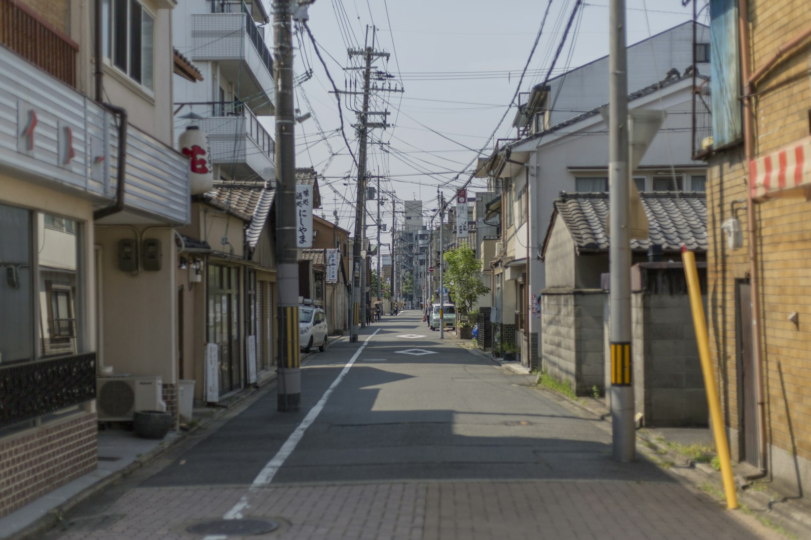

建物全体の熱と空気の流れを、一つの系統として設計する。部屋ごとの用途と負荷に応じた、無理のない空調計画。
給気と排気のバランスを計算し、目に見えない空気の通り道を図面に落とし込む。人が集まる建物ほど、換気が質を決める。
水をどう届け、使い終えた水をどう返すか。給水・排水・衛生器具まわりの計画が、建物の衛生と使い勝手を左右する。
設計図を描いて終わりにしない。躯体・意匠・他設備との取り合いを調整し、現場がそのまま施工できる図面までを責任範囲とする。プロジェクトチームの一員として、図面技術で建物づくりを支える。
教室の空調、手洗い場の給排水、体育館の換気。学校をはじめとする公共施設で引いた線は、竣工後もずっと、その建物を使う人の毎日を支え続ける。
代表の相生哲男は、京都設備事務所協会において副会長・事業委員会委員長等を歴任（2022〜2024年期）。地域の設備設計業界とともに歩んできました。

| Name | 相生設備事務所株式会社 |
|---|---|
| Representative | 代表取締役 相生 哲男 |
| Address | 〒610-0121 京都府城陽市寺田林ノ口11-309 JR奈良線「城陽」駅 徒歩約10分 |
| Established | 2019年2月 |
| Capital | 500万円 |
| Business | 空気調和設備・換気設備・給排水衛生設備の設計、設計図・施工図の作成 |
| Tel / Fax | TEL 0774-56-6440 ／ FAX 0774-54-3444 |